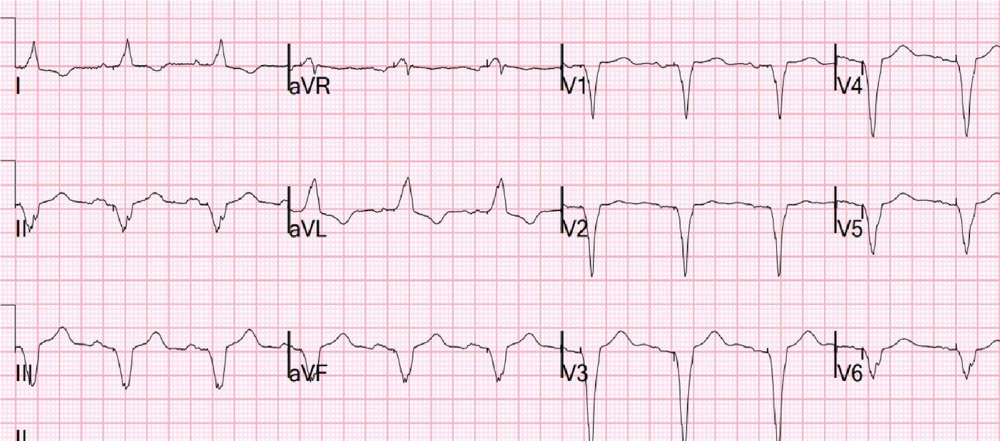
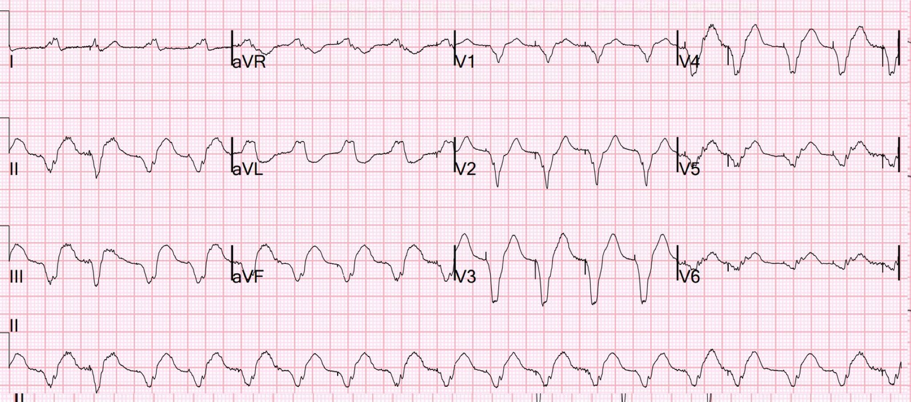
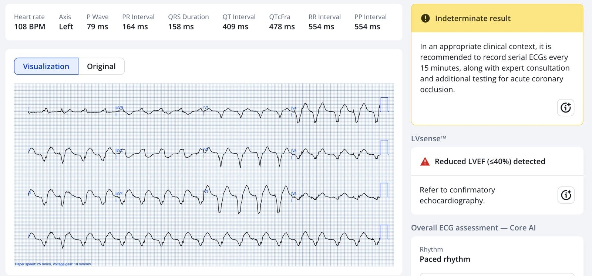
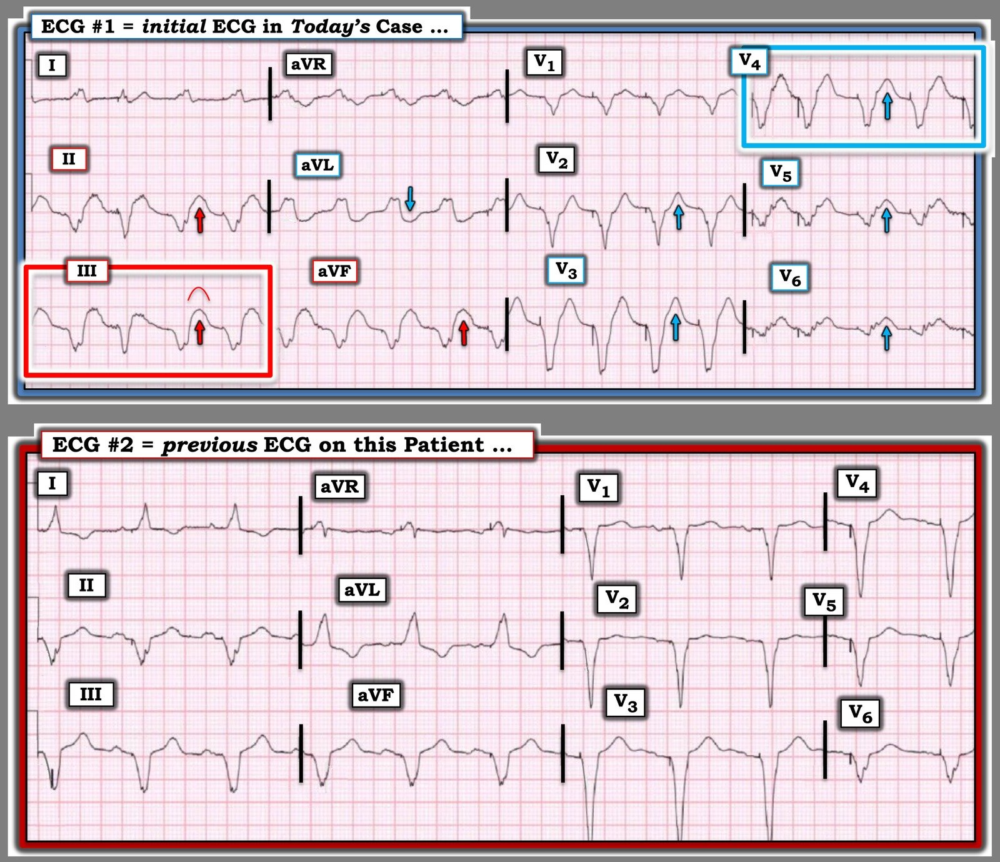

11/03/2026 — Sốc tim cấp ở bệnh nhân có nhịp tạo nhịp thất
Bản dịch tiếng Việt của bài "Acute Cardiogenic Shock in a patient with ventricular paced rhythm." – Dr. Smith’s ECG Blog. Giữ nguyên toàn bộ 6 hình ảnh và 2 video của bản gốc.
Một bệnh nhân 70 mấy tuổi có tiền sử bệnh mạch vành và thuyên tắc phổi đến viện vì đau ngực khởi phát đột ngột, vã mồ hôi và đau bụng từ 2 giờ trước. Huyết áp ở mức 70/30. Sốc cấp (lạnh, da ẩm, tụt huyết áp và đau bụng).
Việc đầu tiên cần làm khi bệnh nhân bị sốc là đánh giá chức năng tim:
Rõ ràng chức năng thất trái rất kém, và có rối loạn vận động thành (wall motion abnormality) rõ rệt. Vì vậy hình ảnh này phù hợp với nhồi máu cơ tim do tắc (OMI) cấp. Thất phải không giãn.
Sốc tim cấp kèm đau ngực thì hoặc là OMI cấp diện rộng, đứt van cấp, vỡ cơ tim cấp, tràn máu màng ngoài tim cấp, hoặc thuyên tắc phổi cấp. Siêu âm tim tại giường cho biết chức năng thất trái rất tồi, thất phải thực ra lại nhỏ, không có dịch màng ngoài tim. Vì vậy đây là nhồi máu cơ tim cấp cho đến khi chứng minh ngược lại, ngay cả khi chưa có điện tâm đồ.
Tiếp theo, chúng ta cần ghi điện tâm đồ:

Bạn nghĩ sao?
Đây là nhịp tạo nhịp thất (ventricular paced rhythm) với nhiều chuyển đạo xác nhận nhồi máu cơ tim do tắc (OMI) theo tiêu chuẩn Sgarbossa cải biên theo Smith (Smith Modified Sgarbossa Criteria): Có ST chênh lên ngược hướng quá mức xét theo tỷ lệ ở tất cả các chuyển đạo dưới (chuyển đạo III có 3,5 mm chia cho 5 mm = 70%. Chỉ cần một chuyển đạo có tỷ lệ > 25% đã có độ đặc hiệu cao cho OMI ở nhịp tạo nhịp thất. Các chuyển đạo V5-6 cũng có tỷ lệ > 25%. Có ST chênh xuống soi gương ngược hướng quá mức xét theo tỷ lệ ở aVL (>30% ở 1 chuyển đạo là đặc hiệu 100%!). Có ST chênh xuống đồng hướng ở V2 (một lần nữa, CHỈ RIÊNG dấu hiệu này đã đủ để chẩn đoán).
Xem bài báo chúng tôi đã viết (tác giả chịu trách nhiệm chính là Smith): Dodd KW, Zvosec DL, Hart MA, và cs. Electrocardiographic Diagnosis of Acute Coronary Occlusion Myocardial Infarction in Ventricular Paced Rhythm Using the Modified Sgarbossa Criteria. Ann Emerg Med [Internet] 2021;Truy cập tại: http://dx.doi.org/10.1016/j.annemergmed.2021.03.036
Nếu bạn chưa nhận ra, có lẽ xem một điện tâm đồ gần đây trước đó sẽ giúp ích:


Hãy đặt chúng chồng lên nhau để bạn có thể thấy cả hai cùng lúc; đây lại là điện tâm đồ lúc nhập viện khi đang sốc:


Còn nghi ngờ gì về những gì đang diễn ra không?
Đáng tiếc là Queen chưa chắc chắn. Nhưng kết quả “không xác định” (indeterminate) của Queen of Hearts vẫn rất đặc hiệu, và kết hợp với xác suất tiền nghiệm cực kỳ cao thì rõ ràng đây là OMI cấp gây sốc tim.


Đáng tiếc là các bác sĩ điều trị không tin đây là nhồi máu cơ tim. Các bác sĩ tim mạch cho rằng ông ấy “quá không ổn định” để đưa vào phòng thông tim (cath lab).
Họ đưa bệnh nhân đi chụp CT vì lo ngại thuyên tắc phổi (PE), và vì đau bụng. Họ cho thuốc vận mạch. Họ đã tính đến các thiết bị hỗ trợ thất trái, ECMO, v.v.
Đây là phần phim CT cho thấy tim:
Hãy để ý các vùng giảm tưới máu cơ tim loang lổ rất nặng. Điều này là do tắc động mạch vành cấp. Một lần nữa, thất phải nhỏ hơn nhiều so với thất trái.
Bệnh nhân còn được làm một siêu âm tim chính thức tốn thời gian trước khi vào phòng thông tim:
EF = 20%. Rối loạn vận động thành khu trú – vô động vùng mỏm, thành bên, thành trước bên từ đoạn giữa đến đáy, thành dưới vùng mỏm, thành trước từ đoạn giữa đến đáy, thành dưới bên từ đoạn giữa đến đáy.
Tất cả đều phù hợp với tắc động mạch vành cấp.
Theo quan điểm của tôi, đây rõ ràng là sốc tim cấp do tắc động mạch vành cấp. Lẽ ra không được có bất kỳ sự chậm trễ nào trong việc đưa vào phòng thông tim. Theo tôi, “quá không ổn định” không phải là một lý do.
Tôi sẽ nói với bác sĩ can thiệp của mình: “cách duy nhất để bệnh nhân sống sót là tái thông mạch máu NGAY LẬP TỨC. Nếu ông ấy tử vong trên đường tới phòng thông tim hoặc trong phòng thông tim, thì cũng đành vậy. Không có chuyện “quá không ổn định” để nhận liệu pháp duy nhất có thể cứu được bệnh nhân.”
Từ lúc đến viện đến lúc chụp mạch vành mất gần 5 giờ:
(Các) tổn thương thủ phạm: Các tổn thương nghi là thủ phạm gồm tắc cấp lỗ xuất phát nhánh ramus và các chỗ hẹp thủ phạm ở đoạn gần và đoạn giữa động mạch mũ.
Bệnh nhân đã tử vong.
Những điểm cần học:
- Hãy học cách chẩn đoán OMI trong bối cảnh nhịp tạo nhịp thất. Điều đó không quá khó!!
- Trong sốc tim do OMI, can thiệp mạch vành là điều sẽ cứu được bệnh nhân!
- Đừng bao giờ trì hoãn can thiệp vì “bệnh nhân quá không ổn định.”
- Nếu bạn không có khả năng làm PCI, thì có chỉ định dùng thuốc tiêu sợi huyết!
- Tử vong trong sốc tim cao, nhưng với tái thông mạch máu kịp thời, tử vong có thể giảm đi rất nhiều. Xem 2 nghiên cứu dưới đây.
Thời gian trung bình đến khi tái thông mạch máu là 12 giờ trong nghiên cứu này, và tử vong là 50% ở cả hai nhóm (tái thông “sớm” so với điều trị nội khoa) Hochman JS. EARLY REVASCULARIZATION IN ACUTE MYOCARDIAL INFARCTION
COMPLICATED BY CARDIOGENIC SHOCK. New England Journal 1999.
Saito Y và cs. Door-to-Balloon Time and Mortality in STEMI With Cardiogenic Shock: A Nationwide Registry. JACC Asia 2024;4(5):421-2
Bài báo này của Saito cho thấy thời gian từ cửa đến bóng (door-to-balloon) ngắn trong sốc tim đi kèm tỷ lệ tử vong 17%, tốt hơn nhiều so với nghiên cứu ở trên nhờ can thiệp nhanh!!
Kết quả:
Tỷ lệ tử vong trong bệnh viện cao hơn ở bệnh nhân có sốc tim (CS) và ngừng tim (CA), tiếp theo là nhóm có CS nhưng không có CA và nhóm không có CS (36,7% so với 17,0% so với 2,3%; P < 0,001). Đáng chú ý, thời gian từ cửa đến bóng có tương quan thuận với tỷ lệ tử vong trong bệnh viện quan sát được và đã hiệu chỉnh ở bệnh nhân STEMI có CS (Hình 1). Phân tích đa biến xác định thời gian từ cửa đến bóng ngắn hơn là một yếu tố liên quan với sống còn tốt hơn (OR: 1,07; KTC 95%: 1,05-1,09; P < 0,001). Thời gian từ cửa đến bóng liên quan có ý nghĩa với tỷ lệ tử vong trong bệnh viện ở các phân nhóm CA, sử dụng thiết bị hỗ trợ tuần hoàn cơ học (MCS) và số lượng ca của bệnh viện, và tác động của thời gian từ cửa đến bóng ngắn hơn lên sống còn rõ rệt hơn ở những bệnh nhân không có CA hoặc không dùng thiết bị MCS, mặc dù khác biệt về tỷ lệ tử vong tương đối giữa có và không có CA hoặc sử dụng thiết bị MCS là nhỏ.
Chúng tôi không biết liệu bệnh nhân có thể được cứu sống hay không. Sẽ không ai có thể biết được. Nhưng mỗi phút chậm trễ là cơ tim bị mất đi. Từ thời điểm khởi phát đau ngực đến giờ thứ 4 — 80% lợi ích giảm tử vong của thuốc tiêu sợi huyết bị mất. Từ giờ thứ 2 đến giờ thứ 4, mất 60%. Trong ca này, sự chậm trễ là 7 giờ kể từ khi khởi phát đau ngực.

= = =
======================================
BÌNH LUẬN CỦA TÔI, bởi KEN GRAUER, MD (11/3/2026):
Trước đây — các bản ghi có máy tạo nhịp gây nhiều khó khăn hơn vì một châm ngôn từng được trích dẫn thường quy ==> “Bạn không thể chẩn đoán nhồi máu cơ tim cấp khi bệnh nhân có máy tạo nhịp”. Châm ngôn này từ lâu đã được chứng minh là sai trong nhiều (nếu không nói là hầu hết) trường hợp bệnh nhân mang máy tạo nhịp đến viện vì CP mới khởi phát (đau ngực – Chest Pain).
- Một ví dụ đặc biệt minh họa cho việc một điện tâm đồ tạo nhịp hoàn toàn vẫn có thể chẩn đoán OMI cấp đã được nêu bật trong bài đăng ngày 20 tháng Tám năm 2019 (Xem Bình luận của tôi ở cuối trang trong bài đăng ngày 20/8/2019 này — cũng như trong các ví dụ khác trên Dr. Smith’s ECG Blog, trong đó tiêu chuẩn Smith-Sgarbossa chẩn đoán nhồi máu cơ tim cấp được thỏa mãn dù điện tâm đồ được tạo nhịp hoàn toàn).
= = =
Điện tâm đồ ban đầu trong CA BỆNH hôm nay …
Như Dr. Smith đã bàn luận ở trên — Mặc dù điện tâm đồ ban đầu trong ca hôm nay được tạo nhịp hoàn toàn, nó vẫn chẩn đoán một STEMI cấp diện rộng đang tiến triển .
- Đặc biệt là khi người đàn ông 70 mấy tuổi trong ca hôm nay đến viện với CP mới và trong tình trạng sốc (HA = 70/30 mm Hg — với các chi lạnh, ẩm) — bản ghi mà tôi đã sao chép lại và đánh dấu trong Hình 1 cần được nhận ra đúng là một STEMI cấp .
= = =
Xem lại các dấu hiệu điện tâm đồ trong Hình 1:
Như Dr. Smith đã nêu — chẩn đoán một biến cố cấp đang diễn ra trở nên hiển nhiên ngay khi tìm được điện tâm đồ trước đó của bệnh nhân hôm nay (bản ghi phía dưới trong Hình 1). Nhưng chẩn đoán STEMI cấp lẽ ra phải hiển nhiên ngay cả khi không có bản ghi trước đó.
- Tôi ưa dùng khái niệm tính tương xứng (proportionality) như manh mối hữu ích nhất để xác định liệu những thay đổi ST-T lẽ ra không nên có ở đó có (hay không) hiện diện.
- Trong Hình 1 — “Mắt” tôi lập tức bị thu hút bởi ST chênh lên dạng vòm (hình dạng “mặt mếu”) ở chuyển đạo III (trong hình chữ nhật ĐỎ ở điện tâm đồ #1). Xét độ sâu vừa phải của sóng S ở chuyển đạo III — mức ST chênh lên tại điểm J rõ ràng là không tương xứng. Bằng chứng xác nhận ST chênh lên này là một dấu hiệu cấp ở người đàn ông 70 mấy tuổi tụt huyết áp có CP mới này — đến từ: i) ST chênh lên không tương xứng tương tự ở 2 chuyển đạo dưới còn lại (= chuyển đạo II và aVF); — và, ii) Dấu hiệu ST chênh xuống soi gương không tương xứng tương đương ở chuyển đạo aVL.
Về các chuyển đạo trước ngực trên điện tâm đồ #1:
- Nếu xét riêng lẻ — có thể khó xác định sóng T nhọn ở chuyển đạo V2 của điện tâm đồ #1 có phải là sóng T tối cấp hay không. Dù vậy — hiệu quả hơn nhiều là bắt đầu đánh giá ở những chuyển đạo mà chúng ta biết hình dạng ST-T là không “bình thường”.
- Biên độ gần bằng nhau của sóng T quá “đồ sộ” ở chuyển đạo V4 so với sóng S ở chuyển đạo này — rõ ràng là bất thường ở bệnh nhân tụt huyết áp có CP mới (trong hình chữ nhật XANH) này.
- Tương tự — các chuyển đạo lân cận V5, rồi V6 — chỉ biểu hiện những phức bộ QRS tạo nhịp rất nhỏ, đi kèm sóng T “đồ sộ” không tương xứng, đủ lớn để “nuốt” các phức bộ QRS tạo nhịp nhỏ xíu này vào trong chúng.
- Theo hướng chuyển đạo trước tim còn lại — sóng T ở chuyển đạo lân cận V3 cũng trông to lên không tương xứng so với sóng S vừa phải ở chuyển đạo này.
- Và giờ, khi nhìn trong bối cảnh — tôi nghi rằng đỉnh sóng T nhọn nổi bật mà ta thấy ở chuyển đạo V2 nhiều khả năng cũng biểu hiện tính tối cấp.
- Tổng hợp lại tất cả: Không dưới 9/12 chuyển đạo trên điện tâm đồ #1 bất thường. Gộp lại ở bệnh nhân tụt huyết áp có CP mới này — điện tâm đồ này chẩn đoán STEMI thành trước cấp cho đến khi chứng minh ngược lại.
= = =
Hình 1: So sánh giữa 2 điện tâm đồ trong ca hôm nay. Lưu ý sự thay đổi rõ rệt về hình dạng ST-T trên điện tâm đồ ban đầu hôm nay —so với điện tâm đồ trước đó của bệnh nhân này.


= = =
= = =